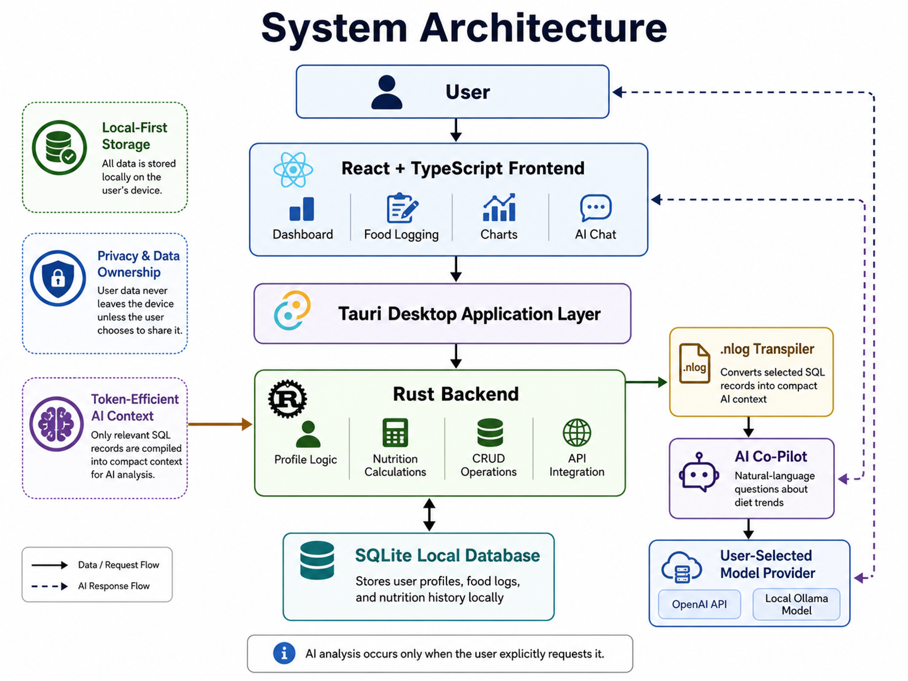

Local-First AI Nutrition Management
Privacy-preserving nutrition tracking with AI-powered insights
Most nutrition apps depend on cloud storage and server-side analysis, requiring users to upload sensitive health data. This creates privacy risks, weakens data ownership, and limits offline access. AI nutrition tools also struggle with long-term diet history because verbose formats like JSON quickly consume LLM context windows.
We built a local-first AI nutrition tracker that keeps the database on-device, supports offline nutrition logging, and lets users choose their own AI model provider. A compact .nlog protocol sends only selected, token-efficient context to the AI advisor instead of exposing the full history.
Existing tools such as MyFitnessPal and Lose It! provide food search, barcode scanning, and nutrition tracking, but commonly rely on cloud databases and server-side processing. Our prototype replaces cloud dependence with local SQLite storage, BYOM (Bring Your Own Model) AI access, and compact nutrition serialization.

Complete local-first stack: SQLite stores meals on-device; AI calls made only for specific context
Nutrition logs and profiles stay in SQLite on the user's device. Complete data ownership and offline access.
Users can connect OpenAI or local Ollama instead of being locked into one vendor.
The .nlog transpiler converts SQL nutrition records into compact AI-ready context without consuming excessive LLM tokens.
Lightweight desktop app with fast local processing and native OS integration.
iOS keyboard focus and safe-area navigation required hardened event handling; iteratively tested on device.
Proper camera cleanup crucial for releasing OS resources; solved through React cleanup hooks and native stubs.
Long-term history overwhelms LLM windows; fixed by restricting to user-selected date ranges and compact serialization.
Migrated from inline CSS to Tailwind v4 utilities, reducing bundle size while improving maintainability across 50+ components.
.nlog makes long-term nutrition analysis more practical for LLMs.